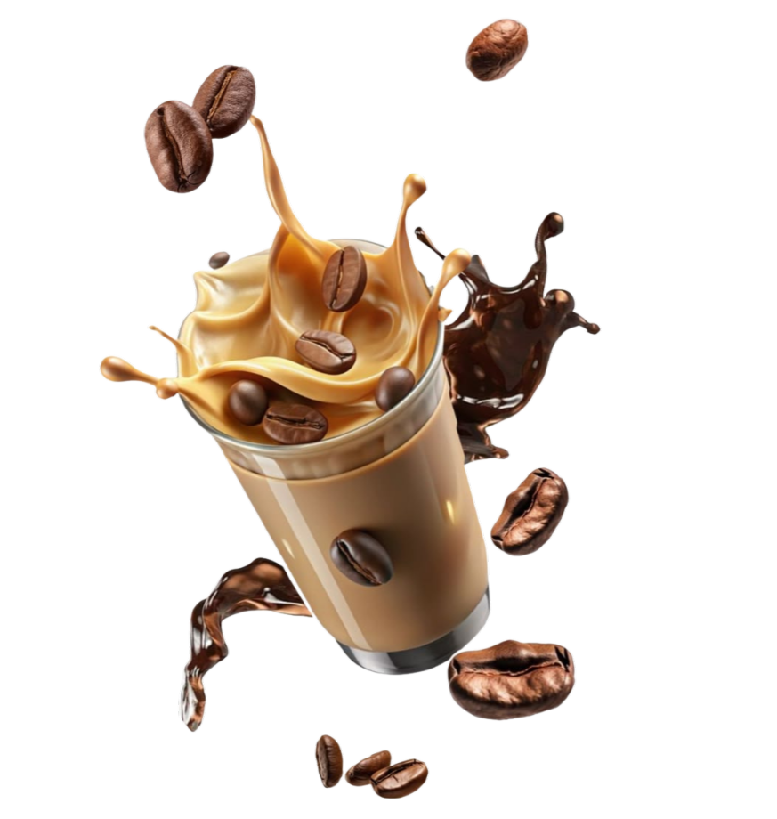
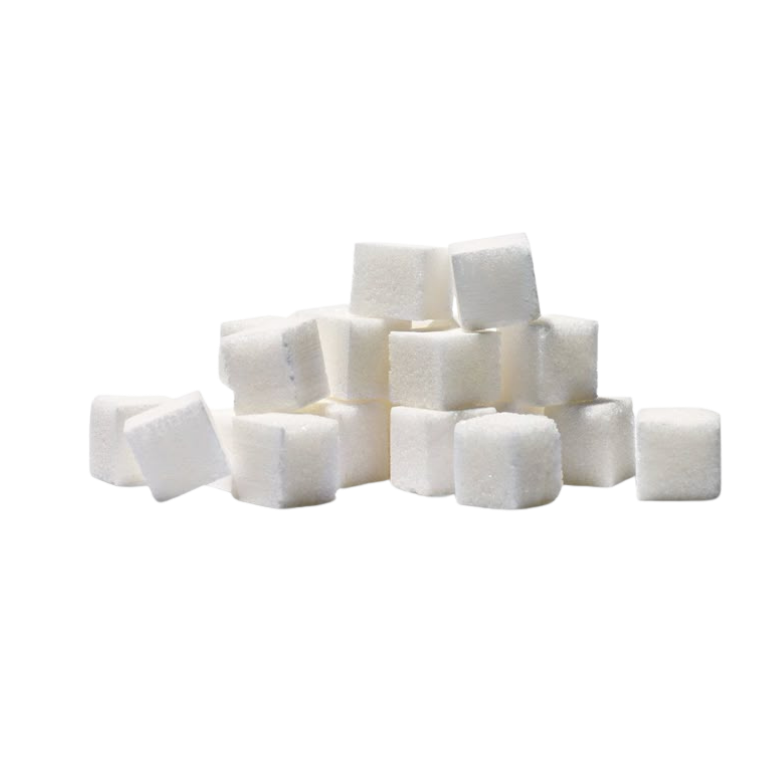
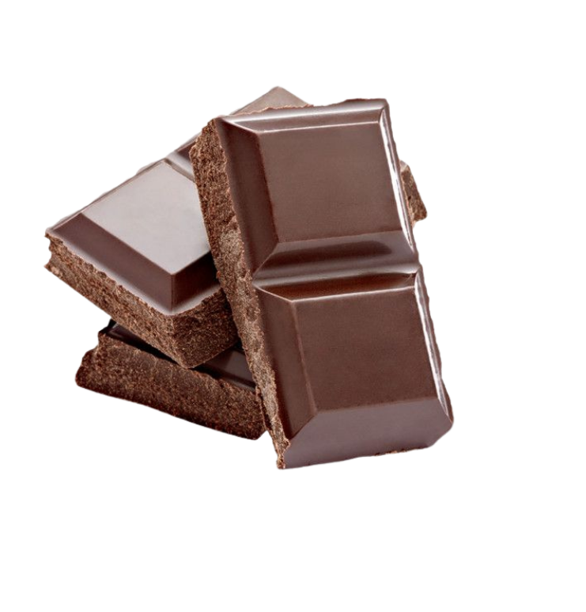
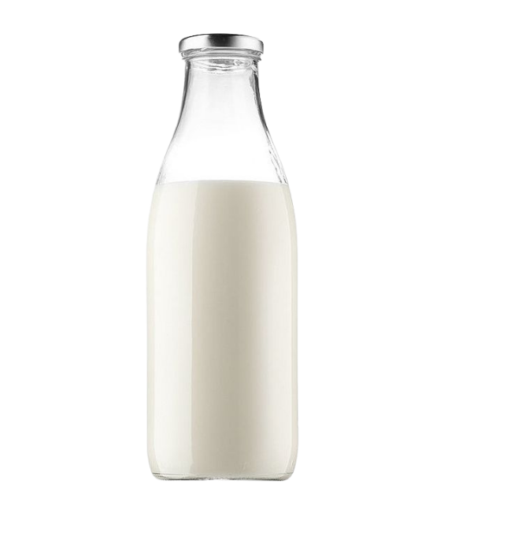
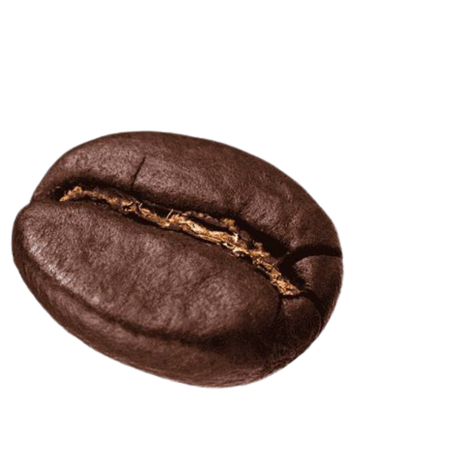
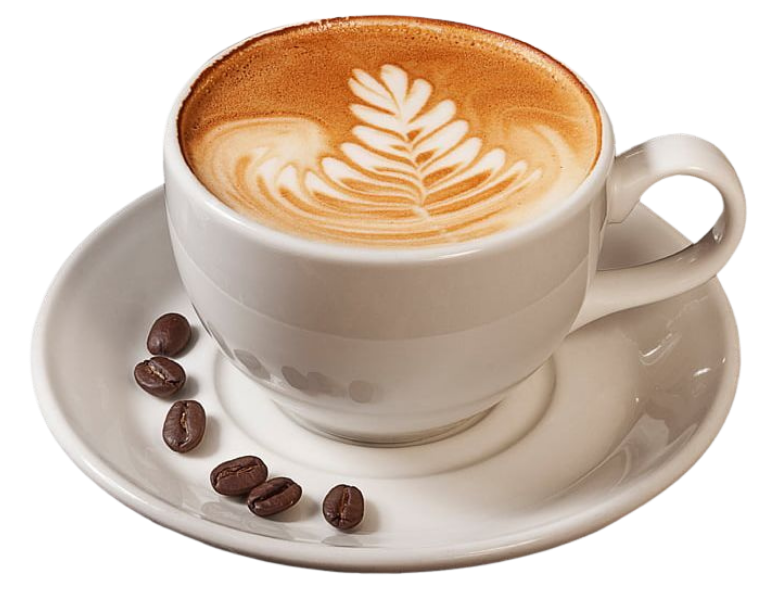

Frappuccino

Bata no liquidificador 1 xícara de cubos de café congelado (café coado previamente), 200 ml de leite, 1 colher de sopa de chocolate em pó e açúcar ou adoçante a gosto. Se quiser uma textura ainda mais cremosa, adicione 1 colher de creme de leite ou leite condensado. Bata tudo até obter uma mistura homogênea e gelada. Sirva imediatamente em um copo alto e finalize com chantilly, calda de chocolate ou raspas para um toque especial.




Cappuccino

Prepare 1 xícara de café forte (ou espresso) e reserve. Aqueça 1 xícara de leite sem ferver e bata ou agite até formar uma espuma leve. Em uma xícara, misture o café com o leite quente, adicionando açúcar a gosto. Cubra com a espuma de leite e finalize com uma pitada de chocolate em pó ou canela. O segredo do cappuccino é o equilíbrio entre café, leite e espuma, criando uma bebida cremosa e aromática.